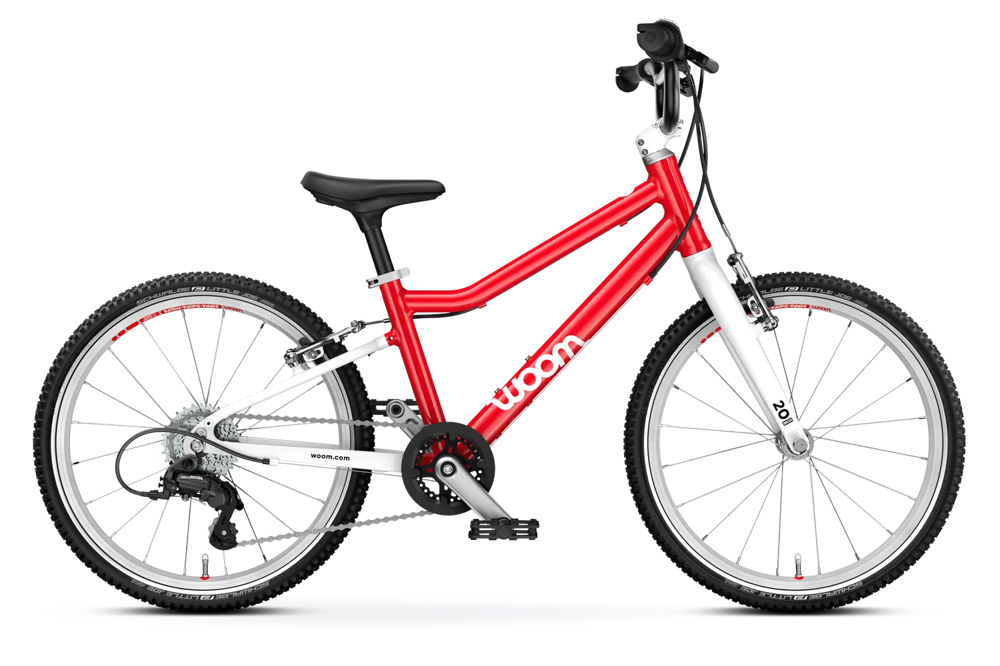

Dedicated squad under your product owner
Six-week pilot, weekly demos, then a clear backlog for the next quarter.
Tech Lead
2 Integration Engineers
QA Automation
DevOps Support
woom already has a loved product and a strong shop. The next lift is the data behind orders, dealers, returns, support, and BI.
Saw woom is hiring for ETL and integration work. That points to a clear need: cleaner handoffs behind the customer and dealer journey.

The ETL role says woom is scaling more than pages. Your shop, dealers, warehouse, support, returns, and BI need the same facts. If those flows drift, parents see wrong items, late updates, and slow support. Dealer growth then adds more edge cases across North America.
Six-week pilot, weekly demos, then a clear backlog for the next quarter.
Trace order, return, dealer, product, and BI data from woom.com to each back-office system.
Add tests for stuck orders, wrong variants, missing labels, and failed warehouse handoffs.
Create one clear view for support and operations when order or return data breaks.
Standardize feeds for stock, product rules, service events, and dealer-ready reporting.
Elinext is a full-cycle software development company, active since 1997, with ~700 in-house specialists worldwide.
No freelancers or subcontractors; teams cover backend, data, QA, DevOps, web, and mobile.
Clients include Siemens, Broadcom, Volkswagen, TRUMPF, TUI, Parrot, TransPerfect, and other global brands.
ISO 9001 and ISO 27001 support quality and security in data-heavy commerce work like woom's.
For woom, that means a steady integration squad under your product owner. You keep roadmap control, while Elinext adds delivery depth, tests, and practical runbooks.

Elinext built a Java server app that collected, transformed, and sent order files between partners.
Read case study
Elinext found legacy weak spots, added features, and helped expand provider coverage.
Read case study